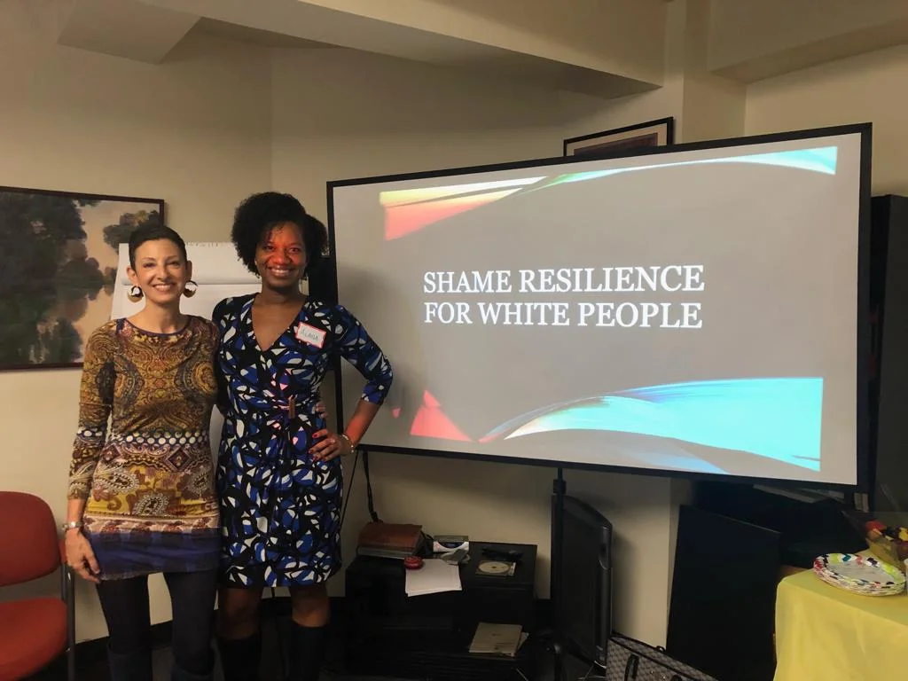

2019-04-04
Successful Workshop
On Saturday, March 30th, 2019 Dr. Alana Tappin and I did our very first workshop together on Shame Resilience for White People! It was an amazing experience and I want to thank Dr. Tappin for all the emotional labor that went into developing and facilitating this workshop.
The Journey
This journey started with an idea in Alana's head that she later shared with me. When I heard it, I said, "sign me up, I want to be a part of this!" So began a collaboration of more than a year! Through countless Zoom and What’sApp conversations, interspersed with in depth reading and research, and a healthy dose of grunt work, Alana and I developed a powerful full day workshop. The workshop was designed to teach white people shame resilience skills as a pathway to having authentic conversations about race and developing the necessary muscle to take proactive positions in promoting racial and social justice. We loved working on the workshop, but we were nervous to schedule the day and make it happen.
Finally, right after the new year, we picked a date almost three months away and committed to recruiting people to come. To our surprise and delight, the workshop sold out in THREE WEEKS!
The Day of the Workshop

The workshop was held in Times Square, with 25 people in attendance! We began the day with a warmup where we asked people “What came up for them when they heard the title of the workshop?” The answers were diverse, creating a foundation for honest and vulnerable conversation that would last all day.
Through experiential and didactic exercises, attendees got to understand their shame triggers, practice critical awareness and begin to learn the skills of relationship repair. We were so grateful to the attendees for digging deep and not shying away from uncomfortable realities.
What’s Next?
After the success of our first workshop, our next step is to extend the workshop to two days! We plan to offer a longer, more in-depth session at the end of August. Exact dates and location, TBA! If you are interested, please feel free to email me and I’ll keep you in the loop.